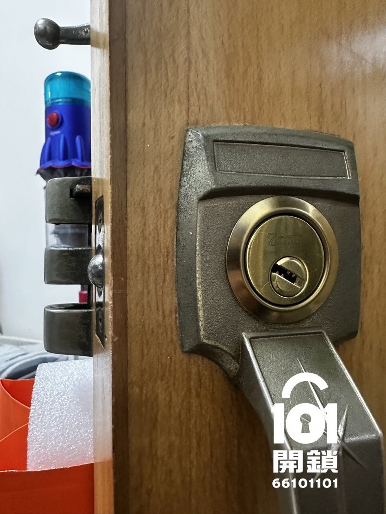

開鎖後門鎖及門框完全無損
「真係好快手，3分鐘就開到😂 有料」
—— 沙田第一城 · 陳先生 五星真實好評
WhatsApp 對話截圖及Google評價同步分享
客戶WhatsApp好評截圖
避免家居「門後陷阱」：木梯、洗衣機移位、櫃桶彈出等隱患，提早預防勝於被困。想了解更多防卡指南及詳細收納技巧，立即閱讀完整文章。
根據101開鎖多年經驗，超過三成嘅卡門求助同門後雜物、家電移位有關。為咗幫助大家遠離困窘，以下係幾個關鍵要點：
專業建議：每個月花1分鐘檢查門後範圍，確保冇任何雜物會喺門嘅路徑上。若遇上門被卡住無法開啟，切勿暴力撞門，應即時聯絡專業開鎖團隊。
無論係木梯、吸塵機、洗衣機移位定係櫃桶彈出導致無法開門，101開鎖師傅快速到達全港各區，使用專業工具安全移除障礙物，並提供家居安全改善建議。收費合理，絕不濫收。
查看更多專業指引，避免因門後雜物造成不便及危險：
問：門俾雜物卡死點算好？
答：第一時間唔好暴力推拉，以免損壞門框或夾傷。盡快致電專業開鎖公司，師傅會用無損工具移開障礙物。
問：點樣預防洗衣機移位？
答：安裝防滑膠墊及固定碼，並確保脫水時平穩，定期檢查位置有冇偏移。